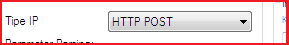

Transaksi IP dengan HTTP POST
Di versi sebelum 3.7.0 OtomaX hanya bisa menerima transaksi IP dari Sedoter (Pengambil stok) dengan metode HTTP GET baik IP Center maupun IP Gateway seperti diuraikan disini, di versi 3.7.0 ini selain HTTP GET juga sudah mendukung HTTP POST. Jadi, Sedoter dapat menembak dengan menggunakan salah satu dari 2 metode, yaitu HTTP GET atau HTTP POST. Ini menjadi solusi ketika software yang dipakai Sedoter hanya dapat mengirimkan transaksi IP dengan metode HTTP POST.
Perlu diketahui fitur HTTP POST ini berada di IP Center sehingga hanya tersedia di minimal edisi Enterprise; dan juga berada di IP Gateway - Center sehingga hanya tersedia di minimal edisi Standard cek disini. Apabila belum memakai versi 3.7.0, update dahulu disini, dan bila edisi Anda belum mendukung, upgrade dahulu disini, dan bila belum mempunyai OtomaX, beli dahulu disini.
Adapun pemanfaatannya dari sisi Sedoter sama seperti HTTP GET klik disini dan klik disini, cuma pada Tipe IP dipilih HTTP POST apabila Sedoter menggunakan OtomaX, perhatikan gambar di bawah ini:

Bagaimana bila Sedoter pengguna software lain? silahkan ditanyakan ke team support software lain tersebut.
Kemudian, bila Anda memiliki pertanyaan - pertanyaan seputar HTTP POST silahkan kirimkan pertanyaan Anda ke alamat email support@otomax-software.com atau klik disini.
Catatan: Disarankan menerapkan metode HTTP POST di sisi Sedoter bilamana Supplier menerapkan transaksi IP tanpa Sign seperti disini.